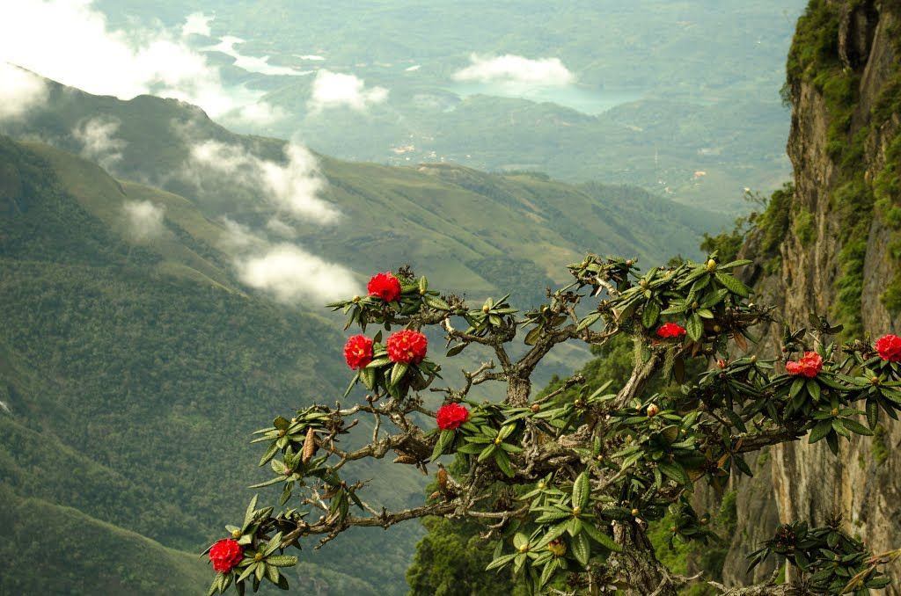

Horton Plains
Named after Sir Robert Wilmot Horton, British Governor of Ceylon in the
19th century, Horton Plains is a beautiful paradise of diverse
visions and nature's
marvels. Known as the Roof of the Island,
it contains the most extensive area of
cloud forest
in Sri Lanka. The Horton Plains National Park at an altitude
of 2,100
metres above sea level and spread over 3,169 hectares,
along with the Peak Wilderness
Sanctuary and Knuckles Mountain
Range comprises the Central Highlands World Heritage
Site.
"
style="width:100%" onmouseover="myFunction(this);" >

![<b>Yala National Park</b>
<br><p>Wild yet powerfully majestic, Yala National Park is leopard country <br>
and is believed to have the highest concentration<br>of these apex predators
on earth. If the thrill of a safari<br> through the rugged, unmerciful bush sounds
<br>elephant enough, then here's the call of the wild with its truest <br>dose of candour.
Moving on to the other love of the wilderness,<br> the Asian elephant a presence of
sheer valour amongst <br>species of indigenous and migratory birds, ingeniously
solitary reptiles, the<br> crocodiles of course steal the show, and endemic plant life,<br>
are only a sneak peek into what's in store.<br><br>
</p>](yalaNP.jpg)